Building a design system from zero, then teaching AI to follow it
I built a lending company’s design system from scratch, shipped it with engineering as a coded library, and later made it the rulebook for AI-assisted prototyping.
- Role
- First in-house product designer
- Team
- 2 designers, ~8 engineers
- Timeline
- 2022–2026
- Tools
- Figma, Storybook, Chromatic, Jira, Claude, Claude Design
Visuals are reconstructions built with Kestrel UI, a fictional brand with fictional data. They show the principles of the work, not the company’s actual screens.

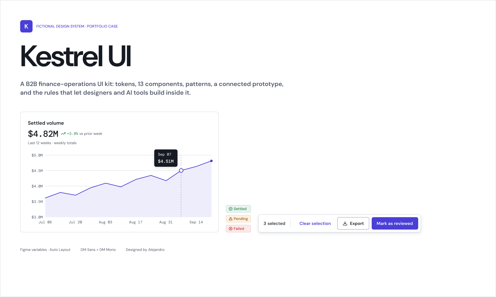
Context
When I joined Camino Financial, now Quantum Lending Solutions, there was no in-house product design and no shared system. Over the next years the system had to serve three kinds of products: an internal servicing platform for operations and underwriting teams, a portal for small-business borrowers, and a portal for lending partners.
My role
I was the company’s first in-house product designer, and there was no design system. Building it, shipping it with engineering and auditing it, end to end, was my responsibility. I defined how design and engineering hand off work and became the formal visual approver for front-end changes in Chromatic. In 2026, together with my design teammate, I redesigned our process around AI.
The problem
Design and engineering had no shared components, and handoff depended on scattered conversations instead of a clear process. Years later a new problem appeared: AI tools could produce screens fast, but nothing stopped them from inventing components, colors or spacing outside the system.
Who the system served
Designs and prototypes with the kit.
“When I start a new screen, I want components and tokens I can trust, so I don’t reinvent what already exists.”
Frustration: no shared components between design and engineering.
Builds components into the coded library.
“When I build a component, I want its anatomy and states documented, so code matches design without back-and-forth.”
Frustration: handoff depended on scattered conversations.
Reviews iterations and decides what moves forward.
“When a feature is still being defined, I want to see a first iteration early, so I can give feedback on something that can actually be built.”
Frustration: a first design took about a week (my estimate).
JTBD format: when [situation], I want [motivation], so [expected outcome].
Key challenges
| Challenge | Discover | Define · HMW | Develop | Deliver |
|---|---|---|---|---|
| No shared components | Design and engineering had no shared components; handoff depended on scattered conversations. | How might we give design and engineering one source of truth? | Tokens first, then documented components, built by engineering as a coded library; Chromatic as the approval gate. | One coded library across every product |
| Each partner’s brand | The partner portal had to carry each partner’s brand. | How might we apply each partner’s brand without forking components? | Brand tokens coordinated with engineering: each partner sets its primary color and logo. | Brand changes without breaking components or contrast |
| AI outside the system | AI tools produced screens fast, but invented components, colors and spacing. | How might we let AI prototype fast without leaving the system? | Claude and Claude Design connected to the UI Kit, with checkable rules; anything new is documented first. | Tasks from ~1 week to 2–3 days (my estimate) |
| A system that falls behind | Patterns kept repeating across prototypes that weren’t in the system. | How might we keep the system current as teams build new things? | A Claude agent audits prototypes every 2 weeks and documents canonical candidates in the Figma file. | Tables and cards became canonical |
Process and decisions
Foundations before components
I started with tokens and variables, so every component would inherit the same decisions instead of repeating them.

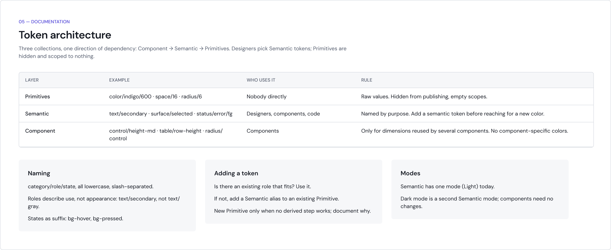

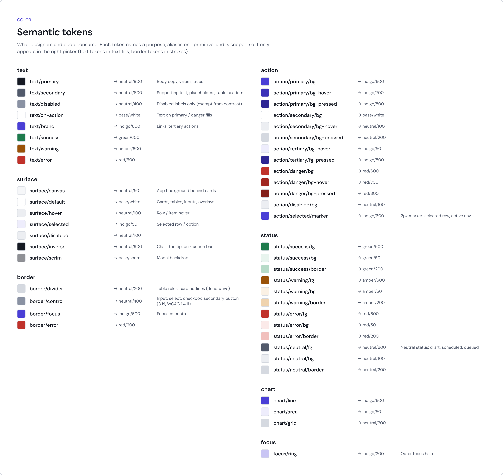

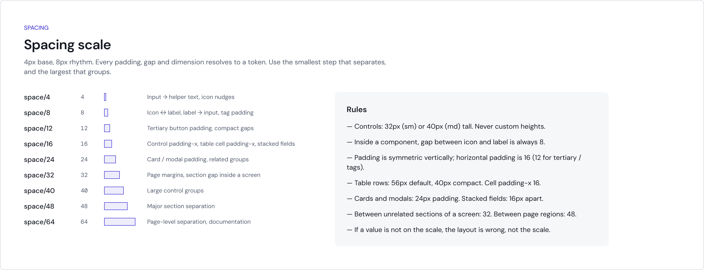
Each partner’s brand, as a token layer
The partner portal had to carry each partner’s brand. White-label lived in the system’s color and brand tokens, which I coordinated with engineering: each partner set its primary color and logo, and the portal applied them without breaking components or contrast. It was used only in the partner portal, covered in the third case study.

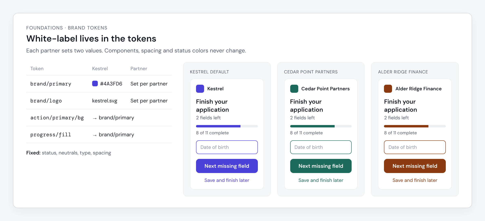
Blueprints engineering could build from
Components came with documentation and blueprints, and engineering implemented them as a coded library used across all products.

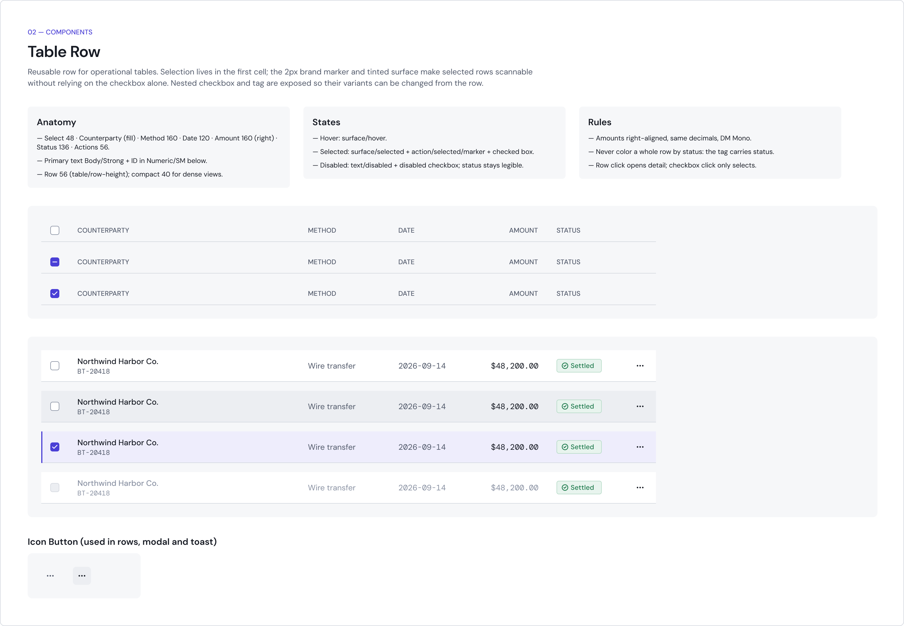

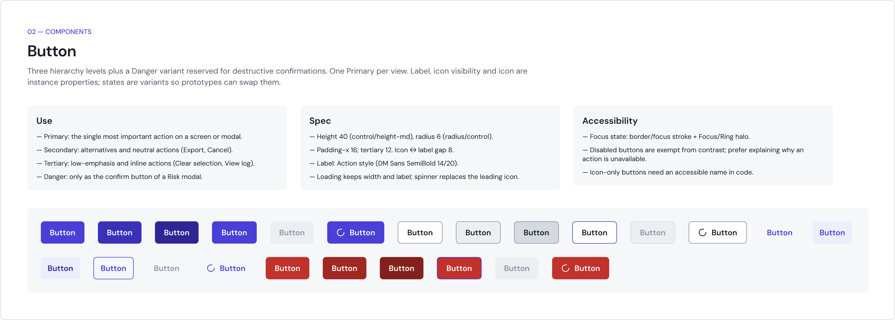

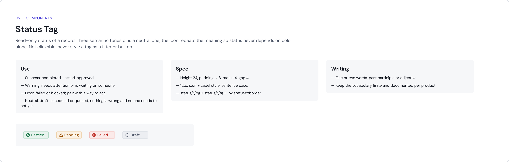
A gate, not a guideline
No visual change reached production without review in Chromatic. Consistency stopped depending on memory.
From design to production
- FigmaDesigned with the kit’s components and tokens
- StorybookEngineering builds the coded component
- Chromatic reviewVisual approval by design
- MergeShips to every product
A process that expects AI
Our workflow went from four stages to six, adding AI exploration and structured feedback before the first real iteration.
Process, before and after
Before
- To do
- In progress
- Ready for review
- Done
After
- To do
- AI exploration
- Shared for feedback
- First iteration
- Ready for review
- Done
One source of truth for AI
We set up Claude and Claude Design to prototype only with the UI kit’s components, tokens and variables. If something new was truly needed, it had to be documented first, then reviewed for the system.

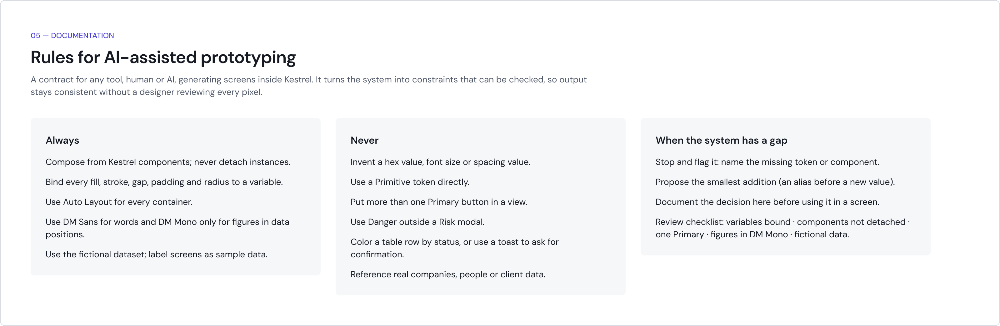

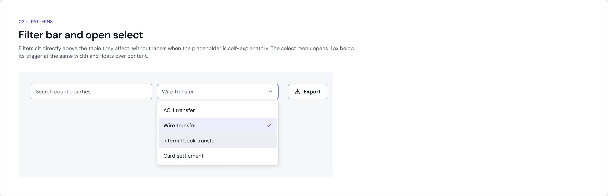
A system that keeps itself current
I connected the organization’s Claude Design to the system, so first iterations reached stakeholders in 2–3 days and were refined in Figma afterwards. Every 2 weeks, a Claude agent I set up audited our prototypes, documented what kept repeating and proposed what should become canonical. Its output was a documentation page inside the audited Figma file.
From kit to stakeholders, and back into the kit
- UI KitTokens and components, coded library
- Claude DesignConnected to the system: first iteration in 2–3 days
- StakeholdersEarly feedback on something tangible
- FigmaFine detail and final prototype
- Audit agentEvery 2 weeks: what should become canonical

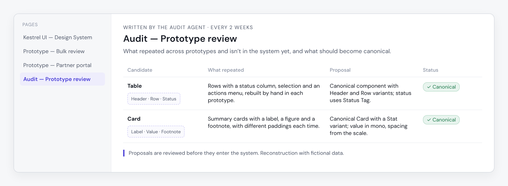
Outcome
- One coded library across every product, with visual approval in Chromatic.
- Tables and cards entered the system through the audit agent, so the kit kept up with what teams were actually building.
- Typical design tasks went from about a week to 2–3 days (my estimate).
- My director of product noted that the team could prototype without waiting on design capacity.
How I’d measure it
Proposal, not run in the project
From ticket to first iteration shown to stakeholders, before and after AI exploration.
Share of prototype screens built only from canonical components, read from each audit.
From the first audit that flags a repeated pattern to its release in the coded library.
What I’d do differently
I’d measure cycle time from day one. The process clearly got faster, but I can only give an estimate, not a number.
Next case study